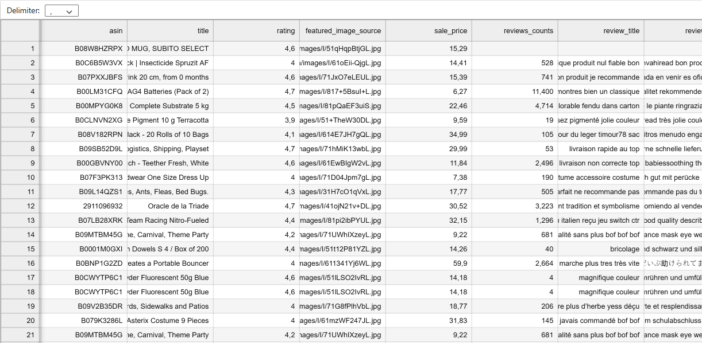
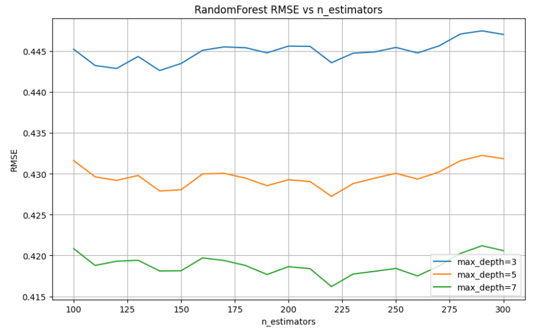
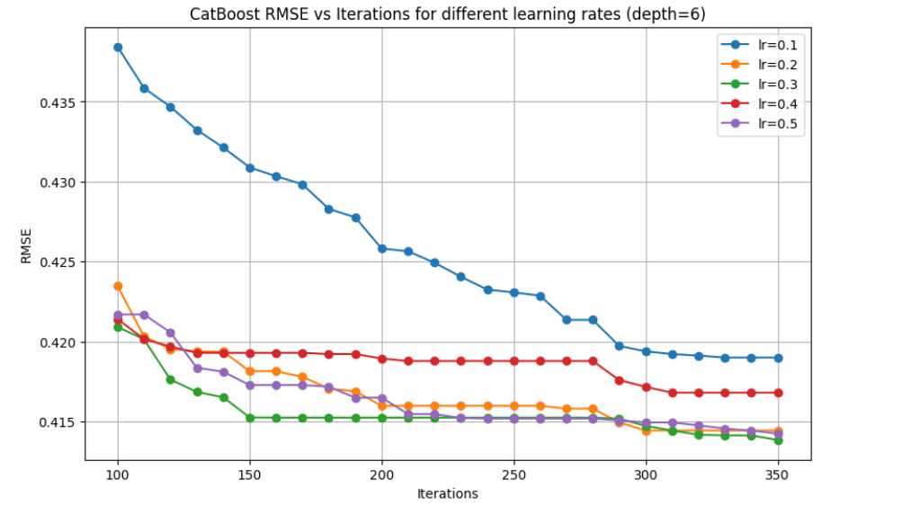

The raw data collection step involves extracting and centralizing all necessary information from the product pages of the Ponera store on Amazon.
üéØ Objective
Build a reliable, standardized, and usable database that will serve as the foundation for AI model training and optimization.
⚙️ Tool Used
The IMPORTFROMWEB extension for Google Sheets automates product data collection. This automation provides:
Time savings in data retrieval,
Reduced human errors from manual entry,
Dynamic updates of collected information.
üì¶ Collected Data
Extracted features include:
ASIN: unique product identifier on Amazon,
Product title,
Price,
Average customer rating,
Total number of reviews,
Customer review content.
✅ Expected Result
A well-organized Google Sheets database containing all necessary information in a uniform format, ready for analysis and AI applications.
2️⃣ Text Cleaning
This step involves preparing and standardizing the textual database to ensure the quality of information used in analysis and AI model training.
Raw text often contains noise (punctuation, uppercase letters, unimportant words, etc.), which can skew results.
Cleaning is therefore an essential step to obtain a more coherent, homogeneous, and usable dataset.
üéØ Objective
Improve text data quality by removing unnecessary or redundant elements while preserving relevant information for analysis.
⚙️ Cleaning Steps
Automatic language detection: identify the language of each review to apply appropriate cleaning.
Lowercase conversion: standardize text to avoid duplicates due to uppercase/lowercase.
Punctuation removal: eliminate special characters or symbols that add no semantic value.
Stopwords removal: remove filler words (e.g., "the", "and", "of") according to detected language.
✅ Expected Result
After this step, the textual database is clean, normalized, and ready for use.
This preprocessing significantly improves natural language processing (NLP) algorithm performance and reduces biases from raw data noise.
üî¥ Example of raw data before cleaning.

üü¢ Example of data after cleaning.
3️⃣ Product Rating Prediction
This step aims to predict a product's expected rating (out of 5 stars) from multiple data sources.
Combining textual, numerical, categorical, and visual data allows a reliable evaluation of perceived product quality and estimates the return risk.
üéØ Objective
Automatically determine the probable rating of a product and identify items likely to receive poor ratings (≤ 2 stars).
üì¶ Features Used
Product title (text) → vectorized with TF-IDF to extract relevant keywords.
Sale price (numerical) → normalized and imputed if missing.
ASIN (categorical) → encoded as binary vectors (One-Hot Encoding).
Main image (visual) → converted to feature vector via a pretrained neural network (truncated ResNet18).
⚙️ Methodology
Each type of data is processed with an appropriate method:
TF-IDF → weights words by their relative importance in the corpus.
Normalization → scales numerical values (price) to a comparable range.
One-Hot Encoding → transforms product identifiers into usable variables.
Image feature extraction → captures visual characteristics (colors, textures, shapes) into a 512-dimensional vector.
üîó Combination
Representations from different sources are merged into a single vector used as input to the predictive model.
This multi-modal approach improves accuracy by simultaneously using:
text (product description),
numerical data (price),
identifiers (ASIN),
visual signals (image).
✅ Expected Result
The system generates:
A predicted rating (rating_pred, between 1 and 5).
An estimated return risk.
4️⃣ Model Hyperparameter Optimization
This step involves optimizing the performance of a RandomForest ensemble model applied to product rating prediction.
RandomForest combines multiple decision trees, reducing variance and improving prediction robustness.
üéØ Methodology
The prepared data (TF-IDF text, normalized prices, encoded product IDs, and image vectors) are concatenated into a single vector as input to the model.
Hyperparameter search is then performed to find the configuration that minimizes prediction error.
n_estimators: number of trees in the forest.
max_depth: maximum depth of each tree.
max_features (TF-IDF): maximum number of keywords considered in text vectorization.
For each parameter combination, the Root Mean Squared Error (RMSE) is calculated on the test set to determine optimal settings.
üìä Results
Best RMSE: 0.4161 with n_estimators=220 and max_depth=7
Best TF-IDF feature count: 260, resulting in RMSE=0.415

Performance variation according to the number of estimators and depth.
Joint optimization of TF-IDF max_features and RandomForest parameters.
✅ Conclusion
Using RandomForest on concatenated multi-modal data (text, numerical, categorical, and visual) produces reliable product rating predictions.
Hyperparameter search showed that n_estimators=220, max_depth=7, and max_features=260 for TF-IDF offer a good balance between accuracy and complexity.
This ensures the model effectively uses all extracted features while remaining stable and generalizable on new data.
5️⃣ CatBoost Hyperparameter Optimization
This step involves optimizing the performance of a CatBoost model applied to product rating prediction.
CatBoost is a gradient boosting tree model, designed to handle categorical variables and heterogeneous data while being resistant to overfitting.
üéØ Methodology
The prepared data (TF-IDF text, normalized prices, encoded product IDs, and image vectors) are concatenated into a single vector as model input.
A hyperparameter search is then performed to find the configuration minimizing prediction error.
iterations: number of boosting iterations (trees).
depth: maximum depth of each tree.
learning_rate: learning rate.
max_features (TF-IDF): maximum number of keywords considered in text vectorization.
For each combination, the Root Mean Squared Error (RMSE) is computed on the test set to identify optimal settings.
üìä Results
Best RMSE: 0.4138 with iterations=350, learning_rate=0.3, and depth=6
Best TF-IDF feature count: 300 → RMSE=0.3484

Example of CatBoost training with early stopping.
Joint optimization of CatBoost parameters and TF-IDF max_features.
✅ Conclusion
Using CatBoost on concatenated multi-modal data (text, numerical, categorical, and visual) yields accurate product rating predictions.
Hyperparameter search showed that iterations=350, depth=6, learning_rate=0.3, and max_features=300 for TF-IDF provide an excellent balance between accuracy and complexity.
This configuration ensures the model effectively leverages all extracted features while remaining stable and generalizable to new data.
üìò Learning Model
1️⃣ Models Used
RandomForest: decision tree forest model, robust to noisy and multi-modal data. Model saved as .pkl.
CatBoost: gradient boosting tree model, effective on categorical variables and heterogeneous datasets. Model saved as .cbm.
2️⃣ Optimal Parameters
Each model is trained with the best hyperparameters identified during tuning:
RandomForest: n_estimators=220, max_depth=7, max_features=260 for TF-IDF.
CatBoost: iterations=350, depth=6, learning_rate=0.3, max_features=300 for TF-IDF.
3️⃣ Input Data
The model receives concatenated vectors from different sources:
Product text vectorized via TF-IDF.
Normalized price and numerical features.
Encoded product identifiers (categorical).
Image vectors extracted via CNN or vision transformer networks.
4️⃣ Prediction Mechanism
Loaded models generate predictions as probabilities based on product ratings, enabling:
Accurate estimation of expected rating.
Scores or recommendations for each product.
5️⃣ Online Deployment
For integration into the web application, we use Hugging Face as a Python server. This allows:
Loading pre-trained models into memory.
Providing real-time predictions for user queries.
Ensuring scalability and robustness of the online pipeline.